AI Academy · Level 4 · Grade 9 · Week 27 · Student lesson
Overfitting
Learn to understand, design, build, test and explain AI systems responsibly.
Project: Responsible Plant Classifier
Before you start
Week 24: validation guides model choice, final test evaluates it.
Plan time to read, investigate and explain. Keep predictions separate from observations.
Student lesson · 1 of 18
Your mission
Start with the target: Compare training and validation evidence for model capacity. Try the recall before opening notes.
Your learning target
I can compare training and validation evidence for model capacity.
I can explain overfitting without assuming every gap proves it.
I can use a declared selection rule instead of perfect training fit.
Remember before reading
Close your notes first. A rough first answer helps us choose the right starting point; it is not a score for your ability.
Without opening the old lesson, explain one key idea from Reproducible Experiments. Give an example and a mistake that the idea helps you avoid.
Without opening the old lesson, explain one key idea from Train, Validation, Test. Give an example and a mistake that the idea helps you avoid.
Without opening the old lesson, explain one key idea from Absolute Error and MAE. Give an example and a mistake that the idea helps you avoid.
After trying, check the relevant lesson or ask your teacher. Change the part of your explanation that the evidence shows was wrong.
An overfit model captures training-specific noise, producing a large gap between training and unseen performance.
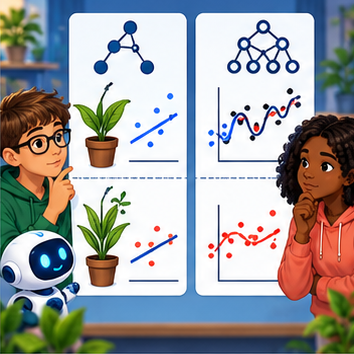
Your target
LEARNING TARGET A has training 98%, validation 58%; B has training 86%, validation 81%. Compute gaps and select a candidate with a qualification.
Builder name and experiment date:
Readiness for the connected explanation
Can a zero training error guarantee good validation performance?
This week’s end goal
By the end, I can explain overfitting using a traced example and a stated limitation.
Student lesson · 2 of 18
Notice the evidence
Investigate the supplied Overfitting case. Separate observations, given facts and assumptions before choosing an explanation.
PICTURE ENTRY
Notice → Predict → Explain
Begin with visible evidence; do not explain more than the picture and information support.
Start with this puzzle
MYSTERY The team must use overfitting to solve a model-building problem. What information do they have? What important evidence is still missing?
Name three visible details without interpreting them.
Predict the data, model, or evaluation decision being made.
Identify one hidden assumption that could change the result.
State what evidence would confirm or reject your prediction.
My prediction and supporting evidence:
A closer explanation
A more flexible model can represent complicated relationships and accidental details. Capacity can help when there is enough relevant evidence, but perfect training performance is not the goal.
Compare training and validation using the same metric while checking leakage and representativeness.
Use fictional classroom data throughout this investigation. Keep the task, units, reference labels and data split visible as you reason.
Earlier weeks supplied the model-building process; this week examines overfitting and model capacity.
Student lesson · 3 of 18
See how it works
Follow the mechanism for Overfitting. Connect each labelled input, deciding step and result.
ML MECHANISM
Input → Model → Evidence
Trace the information, fitted behavior, and evaluation proof separately.
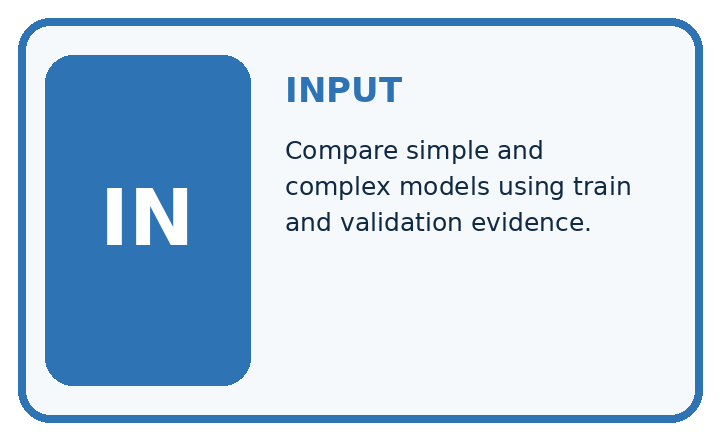
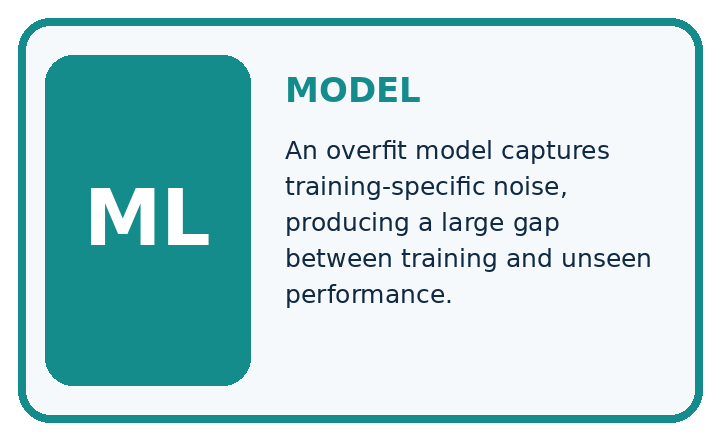
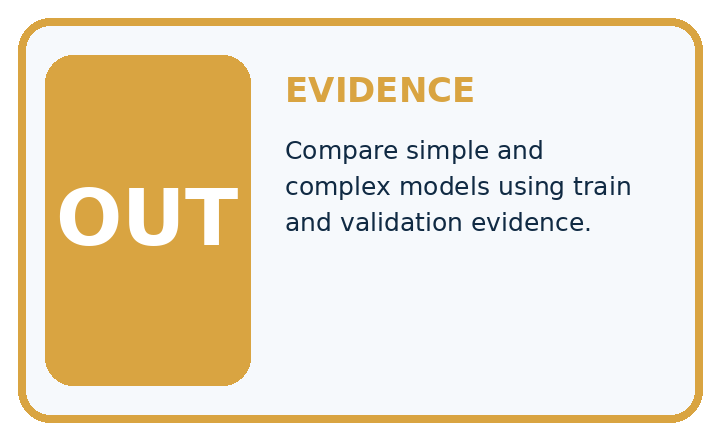
Question to explain
QUESTION Compare simple and complex models using train and validation evidence.
MODEL IDEA An overfit model captures training-specific noise, producing a large gap between training and unseen performance.
PROOF NEEDED Use an unseen case, visible calculation, error analysis, and a stated limitation.
How the mechanism works
UNDER THE HOOD Simple tree: train 82%, validation 78%; gap 4 points. Deep tree: train 100%, validation 65%; gap 35 points.
Draw a fresh data → model → prediction → evaluation trace:
A closer explanation
On the same regression split, a constant has training MAE 5 and validation 6, a line has training 2 and validation 3, and a highly flexible curve has training 0 and validation 8. Under smallest validation MAE, choose the line.
The curve has the lowest training loss but the worst validation result.
Before continuing, underline the decision rule and circle the evidence that supports the conclusion. Explain the example to a partner without replacing the counts or conditions with a stronger claim.
Keep the distinction between an observed result and a proposed next step.
Connect the picture and the explanation
Point to the input, the deciding step and the result in this week’s visual. Explain the same step in ordinary words. A picture helps when you can say what each part represents.
Student lesson · 4 of 18
Compare the cases
Compare the supplied cases for Overfitting. Identify the detail that changes the conclusion.
EVALUATION DESIGN
Four Tests, Four Kinds of Evidence
A system is not understood until it survives more than one comfortable example.


NORMAL Expected data and expected behavior.
Keep this boundary clear
BOUNDARY Value close to a threshold, ambiguous label, or uncertain prediction.
MISSING Necessary field, label, source, or measurement is unavailable.
SHIFTED New lighting, species, device, subgroup, or time condition.
RELEASE RULE Passing one case never proves generalization. Predefine expected behavior for all four categories.
Which case most threatens today's claim, and why?
Change one thing in the pictured case
Change one thing
Change: Large’s validation accuracy rises to82% after a development revision.
Predicted result
Prediction: Its gap is 18 percentage points; it now beats Small on this validation set.
Why the result follows
Reason: Validation performance improved, but the training-validation gap is not a complete release rule.
Student lesson · 5 of 18
Words that unlock the idea
Use the vocabulary of Overfitting to explain a concrete decision, rather than only memorising definitions.
VOCABULARY
Words You Can Calculate and Defend
A definition matters when it lets you interpret a new dataset, model, or result.
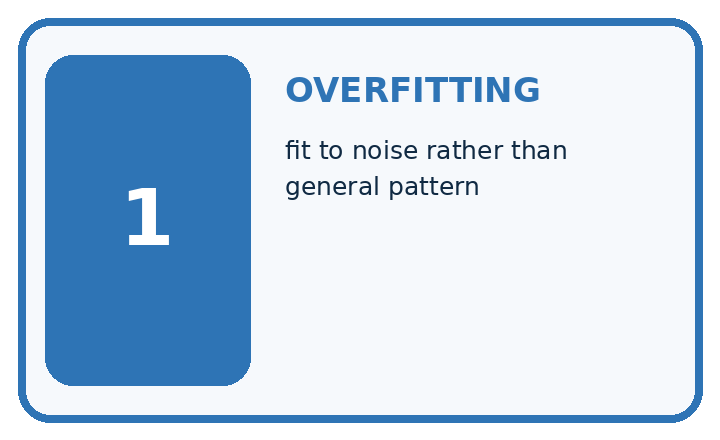
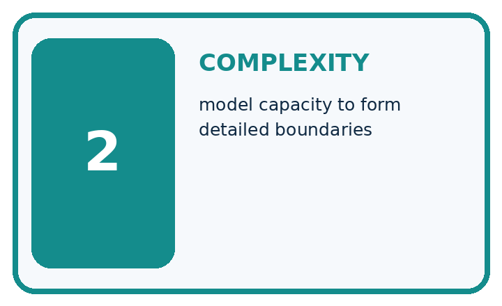
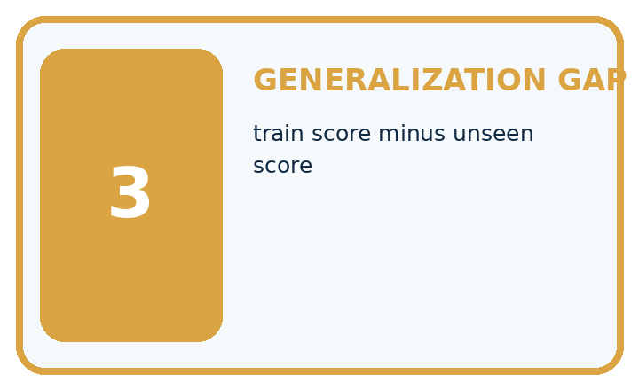
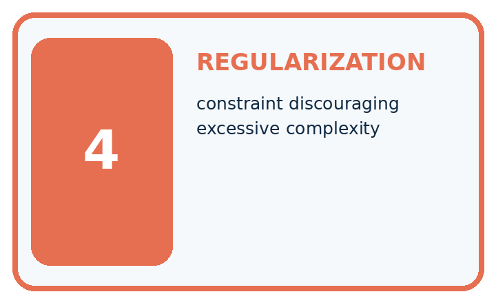
| Term | Precise meaning | My ML example |
|---|---|---|
| overfitting | fit to noise rather than general pattern | |
| complexity | model capacity to form detailed boundaries | |
| generalization gap | train score minus unseen score | |
| regularization | constraint discouraging excessive complexity |
MISCONCEPTION TO REPAIR The model with the highest training accuracy is the best model.
Repair the claim using a definition, calculation, or test record:
Words used in the closer explanation
| Word | Meaning |
|---|---|
| Capacity | Flexibility of a model to represent patterns |
| Overfitting | Learning details that fail to generalize well |
| Underfitting | Failing to capture useful structure |
| Generalization | Performance on relevant unseen examples |
Student lesson · 6 of 18
Follow a worked example
Follow the worked trace for Overfitting, predict a step, then compare with its explanation.
WORKED EVIDENCE
Reason Step by Step
Predict first. Then check each step. A correct answer without visible evidence cannot be audited.
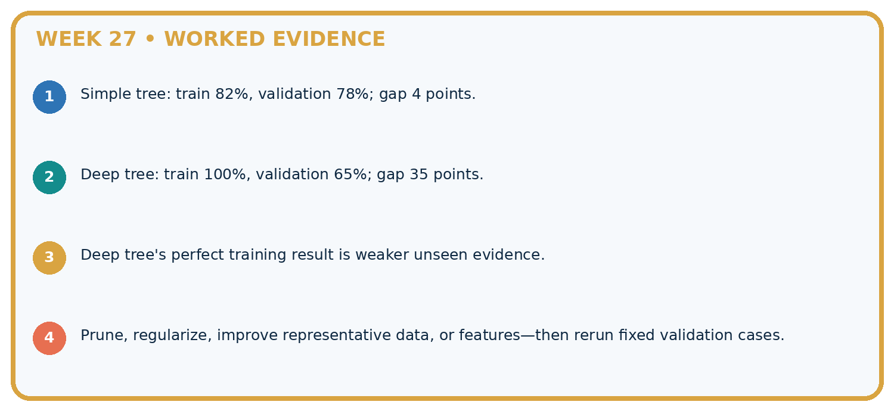
Step 1
STEP 1 Simple tree: train 82%, validation 78%; gap 4 points.
Step 2
STEP 2 Deep tree: train 100%, validation 65%; gap 35 points.
Step 3
STEP 3 Deep tree's perfect training result is weaker unseen evidence.
Step 4
STEP 4 Prune, regularize, improve representative data, or features—then rerun fixed validation cases.
CHECK Verify the denominator, unit, split, class definition, and data version before interpreting a score.
Recalculate, retrace, or restate the evidence independently:
A closer explanation
Overfitting and model capacity at a glance
Learn from the worked case
Cover the result before checking it. Say what is given, choose the procedure, and follow one step at a time. Then uncover the result and explain your first mismatch. Ask why a step is allowed, not only what number it produces.
A pictorial worked case: Overfitting
See overfitting as a gap requiring investigation, not a label based only on model size.
The facts we will use
Supplied facts
Toy model Small: training 85%, validation 80%. Large: training 100%, validation 60%. Same split and scoring rule.
Supplied facts
All inputs and outcomes in this worked example are invented classroom data; no real model run is claimed.
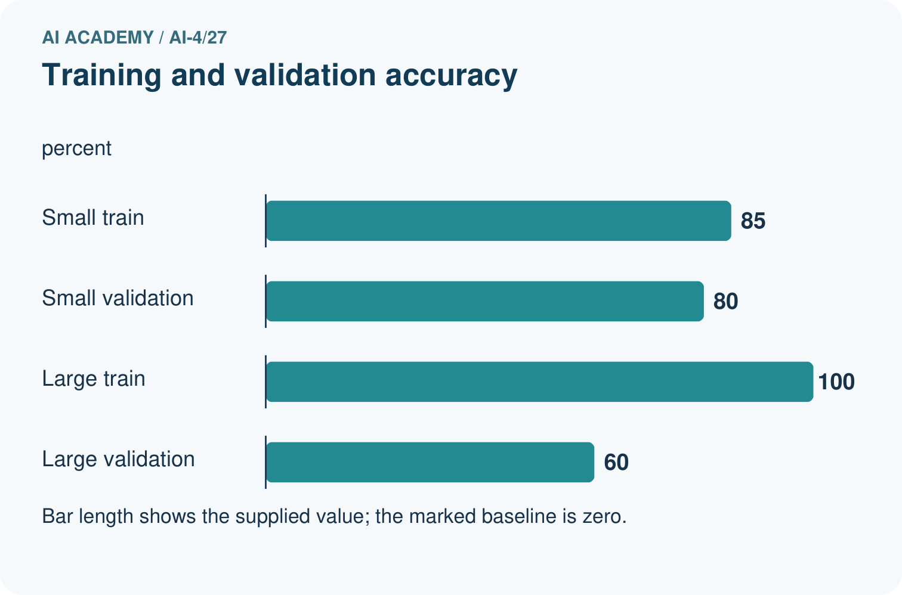
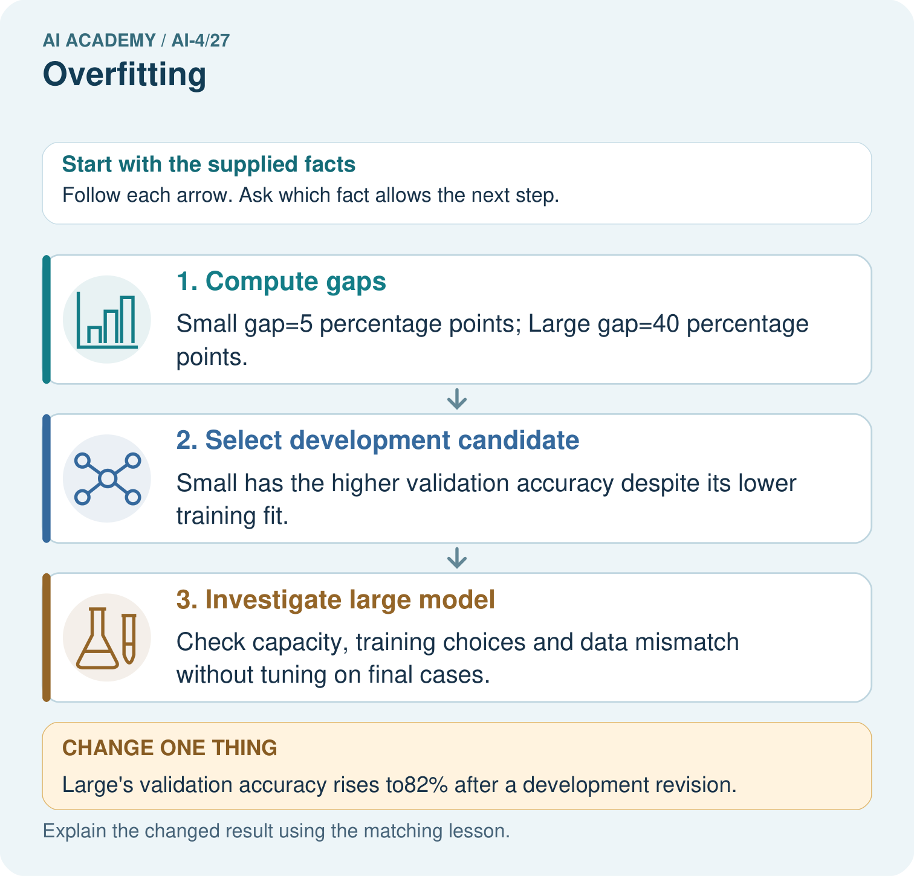
Read the picture one step at a time
Why this result follows
Why the result follows
Read the picture in order. Check capacity, training choices and data mismatch without tuning on final cases. The arrows show which recorded input or intermediate result each decision uses.
Explain the deciding step aloud before checking the changed case; pointing to the final answer alone does not show how it follows.
What this example does not establish
Keep the stated limit
A gap can also reflect data shift or sampling noise. Inspect evidence before attributing every gap to capacity.
Keep the stated limit
Read the labelled picture: Does100% training accuracy prove Large was always best? Point to the relevant step in the picture, then write the changed result and the rule or evidence that supports it.
Keep the stated limit
Change one thing: Large’s validation accuracy rises to82% after a development revision. Predict the result before checking the explanation. What remains the same?
Student lesson · 7 of 18
Find and repair a mistake
Find the unsupported step in the Overfitting claim and explain a repair using the supplied evidence.
Find the first error
ERROR DETECTIVE
Compare → Diagnose → Repair
Do not patch the answer. Find the earliest unsupported assumption, data problem, or experiment error.
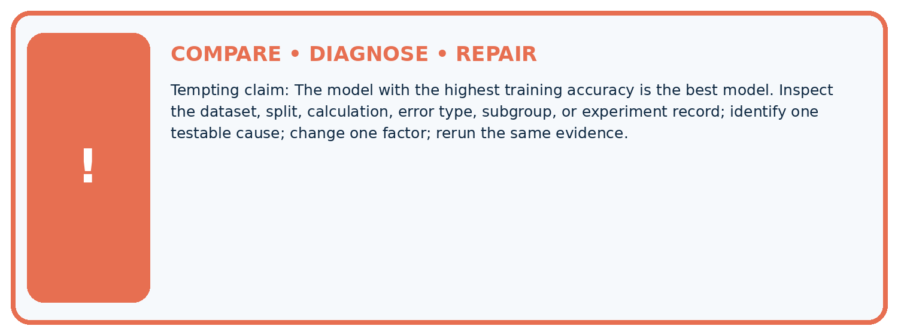
| Evidence record | Expected | Actual | Likely cause / next test |
|---|---|---|---|
| normal case | passes | ||
| boundary case | defined behavior | ||
| missing case | safe fallback | ||
| shifted case | measured limit |
CLAIM TO CHALLENGE The model with the highest training accuracy is the best model.
Diagnose one cause and name the cleanest next experiment:
A closer explanation
A simpler model is not always better. If a flexible candidate has better valid evidence under the declared rule, keep that evidence visible.
Model capacity is one part of an experiment, alongside features, sample size, label quality and the split.
Student lesson · 8 of 18
Practise together
Practise Overfitting with support, then explain the deciding step in your own words.
ML STUDIO
Specify Before You Run
A trustworthy result can be reproduced from the recorded data, code, settings, and evaluation rule.

Experiment record
Question to explain
QUESTION + intended use + success threshold
DATA version + grouped split + leakage check
CODE/preprocessing + features + model + settings + seed
METRICS + positive class + units + denominators
PREDICTIONS + errors + subgroup slices + limitations
HUMAN reviewer + release, revise, limit, or stop decision
Write the minimum record needed to reproduce today's result:
A closer explanation
Change one development factor at a time: simplify the candidate, improve data coverage or adjust a declared regularization setting. Refit on training and compare on validation.
Do not remove difficult valid examples or repeatedly search the test for a favorable result.
Practise with less help: Interpret a gap
Use workbook W2 for the connected example “Overfitting and model capacity”. First fill the input and rule boxes. Try the middle steps before asking for a hint. After a hint, try the next step yourself.
| Plan | Do | Check |
|---|---|---|
| What is given? Which rule or procedure applies? | Record each intermediate step. | Does the result follow? What remains unknown? |
Explain your trace to a partner. Your partner points to one step to check. Swap roles on the next case. Each person writes their own explanation.
Check your reasoning
Use the worked case for Overfitting and model capacity. Proposed explanation: “A final answer is enough”. Decide whether this explanation is supported.
Point to the step or supplied fact that decides; explain your repair if needed.
Answer on your own before discussion. If you are unsure, say which step you need help with.
Explain the picture
Does100% training accuracy prove Large was always best? Point to the relevant step in the picture, then write the changed result and the rule or evidence that supports it.
This is supported practice. Keep the separately named independent case for an attempt before feedback.
Student lesson · 9 of 18
Run the investigation
Investigate Overfitting. Record the prediction, actual observation or labelled paper trace, explanation and next test separately.
EVIDENCE LAB
Predict → Run → Calculate → Interpret
Keep the test conditions fixed, record every result, and change only one planned factor.
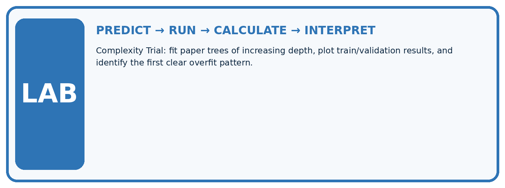
1. Write the hypothesis and expected evidence before running.
2. Complexity Trial: fit paper trees of increasing depth, plot train/validation results, and identify the first clear overfit pattern.
3. Run one normal, one boundary, one missing, and one shifted case.
4. Calculate the metric from raw counts or row-level errors.
5. Interpret what changed, what did not, and what remains unsafe or unknown.
| Case | Prediction | Actual | Calculation / evidence | Meaning / next test |
|---|---|---|---|---|
| Normal | ||||
| Boundary | ||||
| Missing | ||||
| Shifted |
Plan → try → check
Before trying: what do I expect, and why? While trying: which step could first go wrong? Afterwards: what did I actually observe, and what should change? Keep “not run” if you only traced the procedure.
Student lesson · 10 of 18
Build your understanding
Move from recall to tracing, diagnosis and transfer in Overfitting. Explain why each step is justified.
MASTERY
From Knowing the Word to Owning the Idea
Move upward only when you can produce evidence without copying the example.

DEFINE Use all four terms precisely: overfitting, complexity, generalization gap, regularization.
CALCULATE Reproduce the worked evidence with units and denominator.
TRACE Explain the data, code or decision path.
DIAGNOSE The model with the highest training accuracy is the best model.
TRANSFER Solve a fresh dataset or model case.
IMPROVE Change one cause and rerun fixed evidence.
DEFEND State intended use, metric, limitation, and human responsibility.
MASTERY RULE A coached calculation becomes mastery only after a different case is completed independently.
Student lesson · 11 of 18
Connect your project
Apply this week’s idea to Responsible Plant Classifier. Keep an annotated decision and the evidence supporting it.
CUMULATIVE PROJECT
Responsible Plant Classifier
Every week adds one reviewable artifact to the same evidence-based capstone.
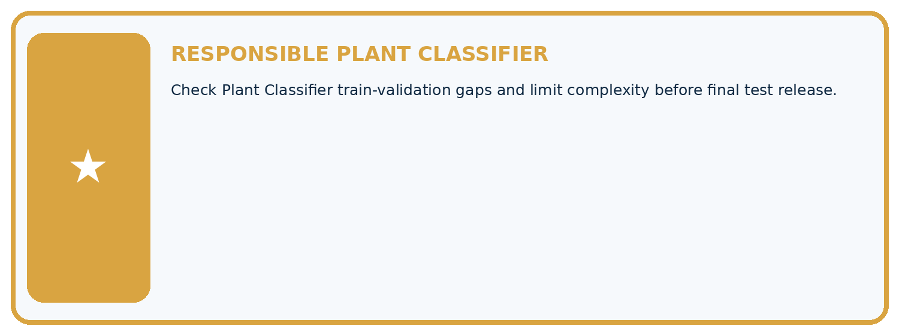
THIS WEEK'S CHECKPOINT Check Plant Classifier train-validation gaps and limit complexity before final test release.
Which requirement or risk does this artifact address?
Which dataset, split, code, and metric version does it use?
What normal and shifted cases were tested?
What remains uncertain or weak?
What decision still belongs to a teacher or qualified human?
RESPONSIBLE RELEASE Never use this classroom prototype for medical, pesticide, agricultural, or other consequential decisions.
My evidence-linked project decision:
Evidence for your project
For your Responsible Plant Classifier, save the input, procedure, observed result and limitation of this check.
Label this worked example as practice; use a different, previously unreviewed case when checking independent understanding.
Student lesson · 12 of 18
Show what you know
Use a genuinely new case for independent evidence. Previously discussed examples remain practice; use the separately named independent case before feedback.
INDEPENDENT PROOF
Explain • Calculate • Transfer • Defend
Complete this with a fresh case after guided practice and compare it with the mastery criteria.
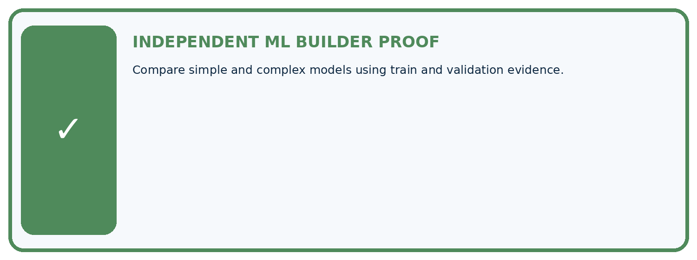
What success looks like
REQUIRED PROOF Compare simple and complex models using train and validation evidence.
□ Define the task, feature/target roles, and intended-use boundary.
□ Show the calculation, code trace, or experiment record.
□ Test a normal case and one revealing boundary, missing, or shifted case.
□ Diagnose one failure without changing several factors at once.
□ Name a limitation, fairness concern, and the human-review action.
Independent evidence and defense:
My level: □ Not yet □ With one hint □ Independently □ I can teach and defend it
Connect to the next lesson
NEXT BRIDGE Carry the experiment evidence into: Learning Curves.
Student lesson · 13 of 18
Study a complete case
Revisit the complete Overfitting case for supported practice. Repeated examples do not become fresh assessments.
Week 27 Worked case
Use the supplied details to practise the weekly concept before attempting the independent question. This case extends the illustrated lesson.
The situation
A scores100% train,60% validation; B scores85%,80% on the same sets.
The question
Compute gaps and select by validation accuracy.
Worked explanation
A gap40 percentage points; B gap5. B has better shared validation accuracy. A suggests overfitting, but investigate distribution differences too.
Explain it in your own words
Which detail supports the answer, and why does it matter?
Trace the supplied case visually
Compare training and shared validation
| Evidence or stage | Value or result |
|---|---|
| A training | 100 |
| A validation | 60 |
| B training | 85 |
| B validation | 80 |
A scores100% train,60% validation; B scores85%,80% on the same sets.
Compute gaps and select by validation accuracy.
A gap40 percentage points; B gap5. B has better shared validation accuracy. A suggests overfitting, but investigate distribution differences too.
Student lesson · 14 of 18
Try a new case independently
Attempt the reserved new case before feedback. Record support; the earlier examples below remain additional practice.
Independent case: Changed independent case
Model A training96%, validation62%; model B training88%, validation79%. Compare gaps and choose a development candidate, assuming the same valid evaluation conditions.
Attempt this case before feedback. Record any help. Earlier examples below are further practice; a case already practised with feedback cannot establish fresh transfer.
Week 27 Independent application
Close the worked explanation. Apply the idea to this different question without copying.
Model A has training accuracy 99% and validation accuracy 70%; B has 88% and 84%. Compute each gap and discuss the evidence.
My answer, with a trace, calculation or supporting evidence
Create and test
Change one relevant detail. Predict the result before testing. Include a boundary or missing-information case when it helps reveal a limit.
My changed input and expected result
Connect to your project
Check Plant Classifier train-validation gaps and limit complexity before final test release.
The evidence I will keep
Your teacher has the independent answer and scoring criteria. Complete the matching workbook week to keep your practice evidence together.
Transfer practice from the original programme
A has training 98%, validation 58%; B has training 86%, validation 81%. Compute gaps and select a candidate with a qualification.
Use feedback to improve
Attempt the independent case before hints. Record whether you worked alone, used a hint or followed a model. After feedback, fix the first unsupported step and explain why it changed.
A later check uses a changed case, not a copied answer.
Student lesson · 15 of 18
Your lesson route
Use this map to navigate Overfitting, connect the goals to tasks and keep one evidence record for each attempt.
Start with this question: See overfitting as a gap requiring investigation, not a label based only on model size.
| By the end, I can | How I will show it |
|---|---|
| Compare training and validation evidence for model capacity | Explain the deciding step, show a trace or test, and state one limit. |
| Explain overfitting without assuming every gap proves it | Explain the deciding step, show a trace or test, and state one limit. |
| Use a declared selection rule instead of perfect training fit | Explain the deciding step, show a trace or test, and state one limit. |
Remember → watch and explain → try with help → investigate → try independently → keep project evidence. Your teacher may spread this lesson across several classes.
Keep your first prediction. Compare it with what the evidence shows and explain any change.
Student lesson · 16 of 18
Finish and return
Explain Overfitting without notes, identify a remaining question and plan a later check with a changed case.
Close your notes. Explain this goal in your own words: Compare training and validation evidence for model capacity
If you are unsure, return to the worked picture and explain one arrow. If you are ready, change an input or assumption and justify your prediction.
Save your workbook evidence. At the next review, try a different case before opening your old answer.
Student lesson · 17 of 18
Supported practice, repair and portfolio
Attempt supported questions before using hints or feedback. Review a missing building block, then keep the completed work.
Use this supported practice once, in the browser or on paper. Keep the reserved independent assessment for a separate first attempt before teacher feedback.
See overfitting as a gap requiring investigation, not a label based only on model size.
Practice 1: explain the deciding evidence
Which labelled step matches this detail? Check capacity, training choices and data mismatch without tuning on final cases.
1. Select development candidate
2. Compute gaps
3. Investigate large model
Hint · try first
Hint if needed: Read the steps in the pictorial case. Match the supplied detail to the stage that performs or records it.
Feedback · compare after trying
After your attempt, compare with the supported explanation: Investigate large model Check capacity, training choices and data mismatch without tuning on final cases. Read the picture in order.
Check capacity, training choices and data mismatch without tuning on final cases. The arrows show which recorded input or intermediate result each decision uses.
Explain the deciding step aloud before checking the changed case; pointing to the final answer alone does not show how it follows.
Practice 2: explain the deciding evidence
Changed case · predict first
Changed-case practice: Large’s validation accuracy rises to82% after a development revision. Which conclusion is supported by the supplied facts?
1. We can decide the result without examining the changed input or the procedure.
2. This one example guarantees correct results for every future input.
3. Its gap is 18 percentage points; it now beats Small on this validation set.
Hint · try first
Hint if needed: Use the changed condition and the deciding step in the pictorial trace. The answer must say what follows from those facts.
Feedback · compare after trying
After your attempt, compare with the supported explanation: Its gap is 18 percentage points; it now beats Small on this validation set.
Validation performance improved, but the training-validation gap is not a complete release rule.
Repair a missing building block
Review Reproducible Experiments (ai-4/26). Goal: Record enough detail to reproduce a run. Short practice: What should accompany the mean 70%?
Point to the relevant step in the picture, then write the changed result and the rule or evidence that supports it.. Return to this week and explain what you changed.
Review Train, Validation, Test (ai-4/24). Goal: Select a model using a declared validation rule. Short practice: Why does B’s zero training MAE not settle the original choice?
Point to the relevant step in the picture, then write the changed result and the rule or evidence that supports it.. Return to this week and explain what you changed.
Review Absolute Error and MAE (ai-4/21). Goal: Calculate MAE MSE and RMSE. Short practice: Why is quoting MSE as4.67 cm misleading?
Point to the relevant step in the picture, then write the changed result and the rule or evidence that supports it.. Return to this week and explain what you changed.
Keep your completed work
Use Download completed work in the hosted lesson to export your answers, reflections, practice feedback and code-run evidence. Open the HTML copy to read or print it.
Drafts stay in this browser when storage is available; clear drafts on a shared device.
Student lesson · 18 of 18
Visual concept journey
Explain each Overfitting graphic using its labels, deciding evidence and relevant limitation.
01. Overfitting: the case
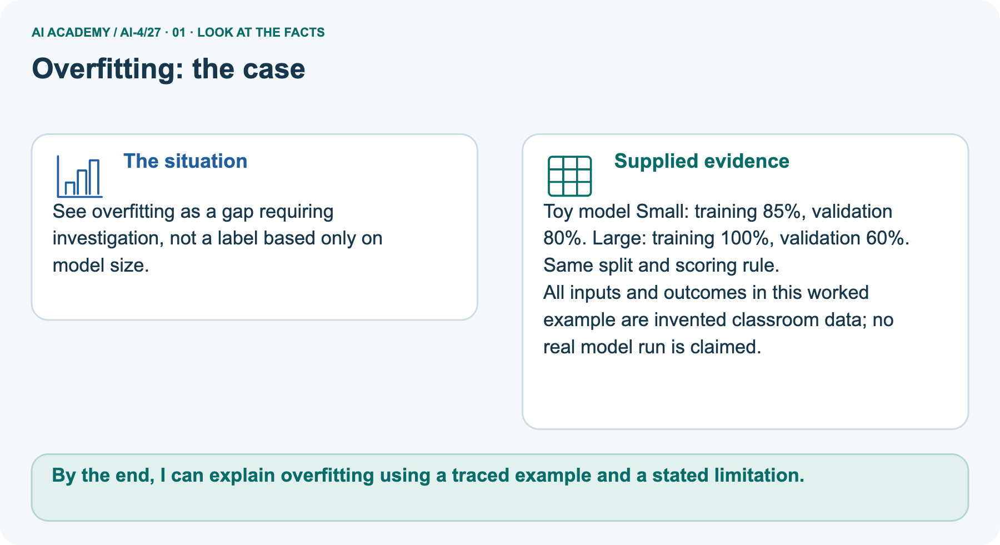
See overfitting as a gap requiring investigation, not a label based only on model size. Supplied facts: Toy model Small: training 85%, validation 80%. Large: training 100%, validation 60%. Same split and scoring rule.
All inputs and outcomes in this worked example are invented classroom data; no real model run is claimed.
Point to the given fact that matters most. Explain why it matters.
02. Follow the deciding steps
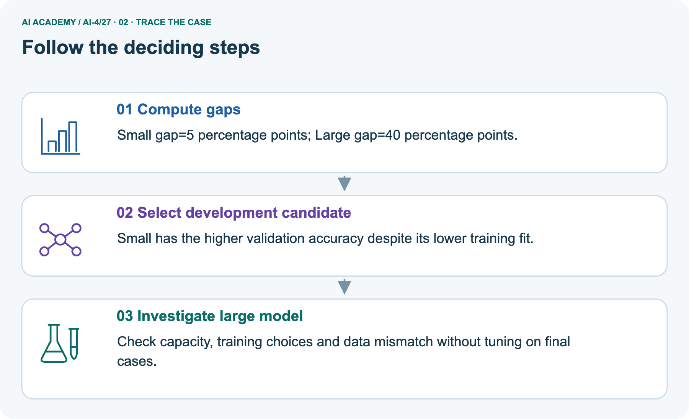
Compute gaps: Small gap=5 percentage points; Large gap=40 percentage points. → Select development candidate: Small has the higher validation accuracy despite its lower training fit. → Investigate large model: Check capacity, training choices and data mismatch without tuning on final cases.
Point to each numbered stage and explain which recorded input it uses.
03. Training and validation accuracy
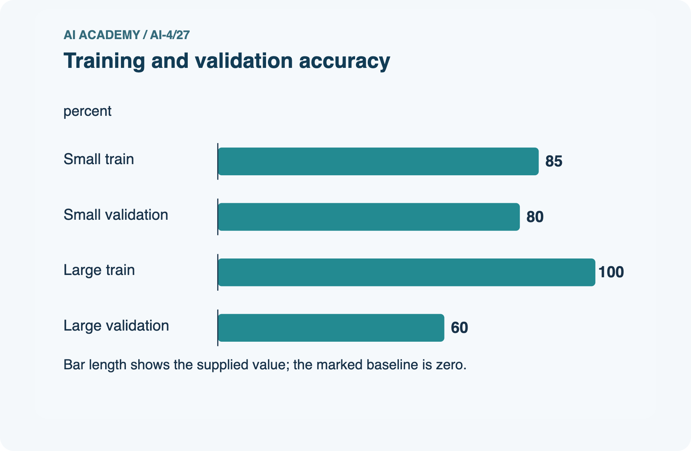
Training and validation accuracy. Units: percent. Small train: 85. Small validation: 80. Large train: 100. Large validation: 60.
Read the labels and values. Explain the relationship the model shows.
04. Change one thing. Trace what follows.
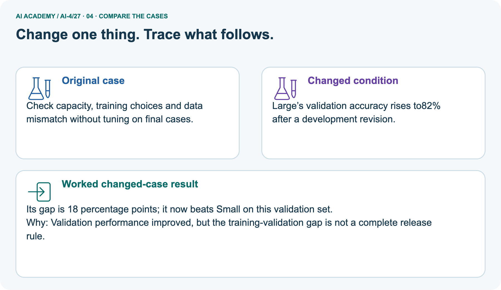
Original case: Check capacity, training choices and data mismatch without tuning on final cases. Changed condition: Large’s validation accuracy rises to82% after a development revision.
Expected result: Its gap is 18 percentage points; it now beats Small on this validation set. Reason: Validation performance improved, but the training-validation gap is not a complete release rule.
Predict before checking the worked changed-case result. Name what changed and what the supplied facts allow you to conclude.
05. Connect the explanation to its limit
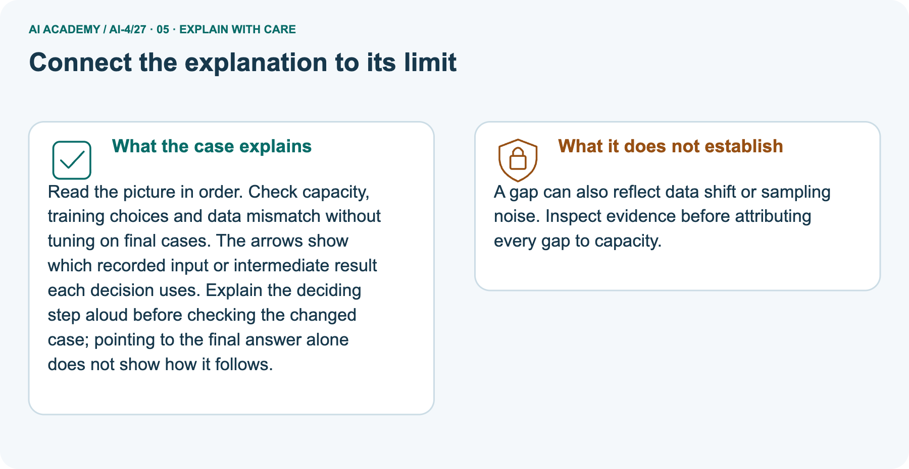
Read the picture in order. Check capacity, training choices and data mismatch without tuning on final cases. The arrows show which recorded input or intermediate result each decision uses.
Explain the deciding step aloud before checking the changed case; pointing to the final answer alone does not show how it follows. Limit: A gap can also reflect data shift or sampling noise.
Inspect evidence before attributing every gap to capacity.
Explain the case, then point to a limit on the claim.
06. Make the idea visible in your project
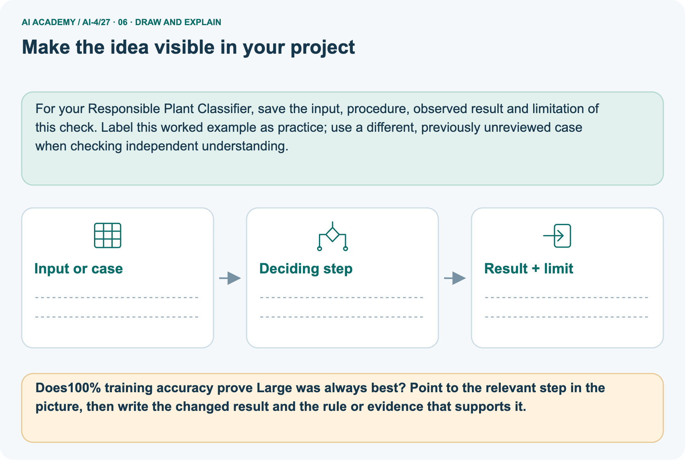
For your Responsible Plant Classifier, save the input, procedure, observed result and limitation of this check.
Label this worked example as practice; use a different, previously unreviewed case when checking independent understanding. Draw your input, deciding step, result and limit.
Supported question: Does100% training accuracy prove Large was always best? Point to the relevant step in the picture, then write the changed result and the rule or evidence that supports it.
Draw your project trace and justify the deciding step using evidence.